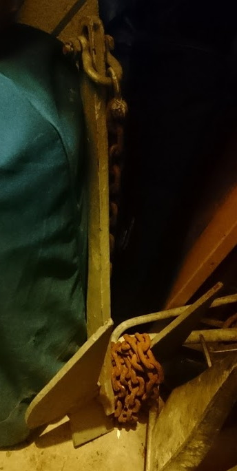
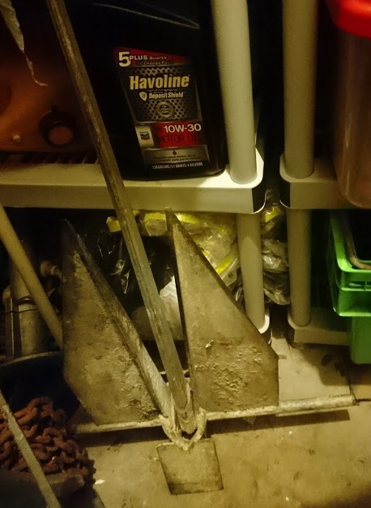
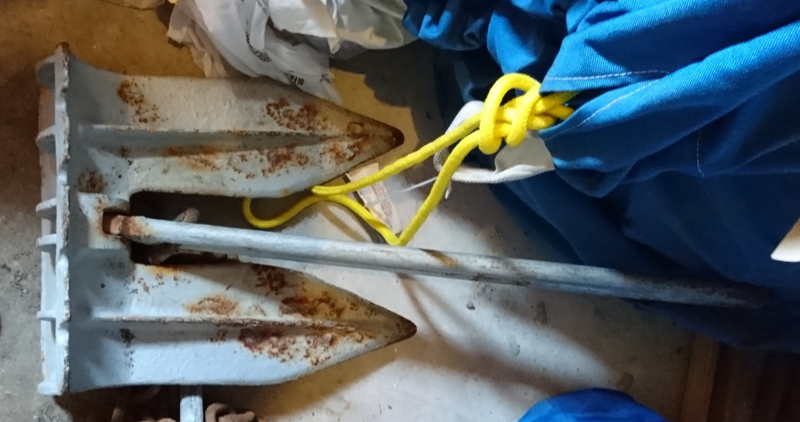
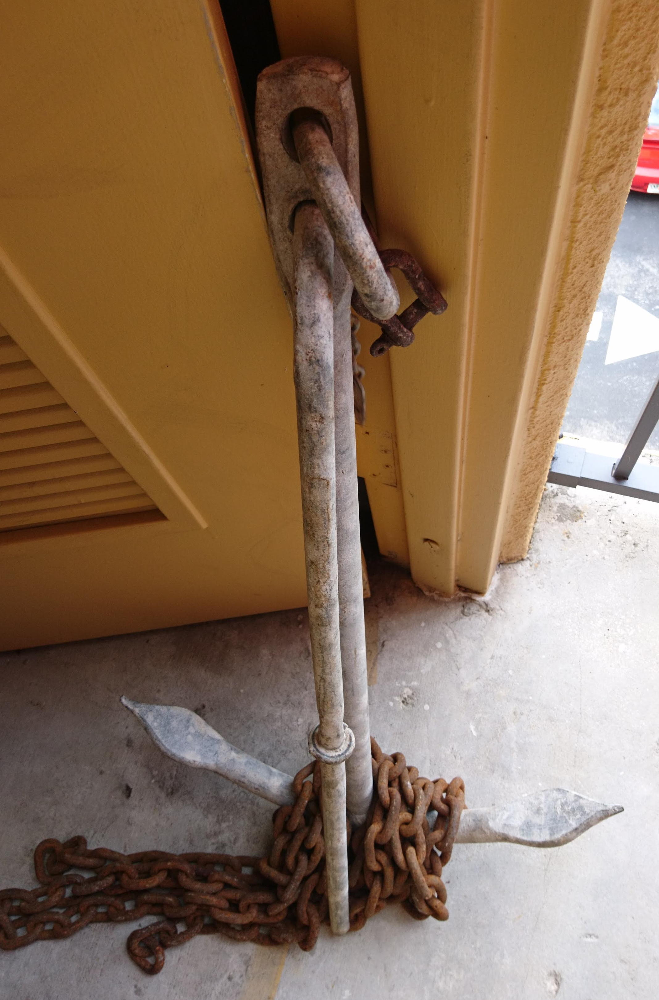
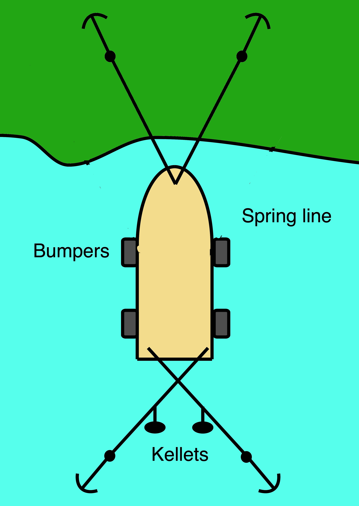

Equipment
- Anchors
- 35lb Danforth
.
On the bow - now primary.
- 40lb Danforth
.
In my storeroom.
- 25lb Navy kedge
.
In my storeroom.
- 15lb Danforth
 .
In my storeroom.
.
In my storeroom.
- 15lb Fisherman
.
In my storeroom.
- Mushroom kellets ***?
- 3 floats for marking anchors. In my storeroom.
- Rodes, marked at 50', 75', 100'
- 200' regular anchor rode, 28' chain. In place on bow.
- 200' spare anchor rode, 12' chain. In port gear locker,
below the switch panel.
- 100' spare anchor rode, 18' chain. In port gear locker,
below the switch panel.
- 6 2000lb shackles. In port gear locker, below the switch panel.
- Deck gear
- Chaffing gear. In my storeroom.
- Covers for dorades and fans. In port emergancy cupboard aft of head
- Fenders and fender boards. In port cockpit locker.
- Ziplock bags with cards. In port
emergancy cupboard aft of head.
- Boat name
- Year, Make/Model, Length of vessel
- HIN number, FL # or USCG Doc #
- Full name and date of birth
- Phone numbers and Email addresses
- Physical address
- Where you normally keep your boat
- Instructions for bilge pump
Procedure
Reduce Windage for Storm Watch or worse
- Drop jib and store below.
- Rope up the main
- Drop boom and tie both sides to winches
- Centre helm and bungee (not brake).
- Replace 2 dorades and 1 fan with covers
(In port emergancy cupboard aft of head)
- Bungee halyards to mast.
Hurricane Watch seems likely
- Take off main and store below.
- Fetch anchors, floats, chaffing gear are in my car (or in the
storeroom at 2756 Day Ave #404, Coconut Grove, in the landing
between the 3rd and 4th floors - call me for the gate code).
- Contact the team, and plan to move
- Diane Ferrari (Moon Glow) 305-798-0985
- Bob Aiken (Brooks) 312-804-1413
- James Grupenhoff (Stardust) 305-321-6729
- Mike Lovelady (Misty) 305-332-8974
- Anil and Femke Tewari (Second Wind) 305-965-7991 and 305-542-6759
- Jorge Valdes-Pages (Pamina) 305-773-0828
- Luis Solorzano (Vihara) 415-699-2784
Hurricane Watch
- Remove valuables from boat
- Move out
- Take handheld radio and GPS
(Key hanging on stress post. Give some gas in neutral,
turn on key, hold down preheat for 8s, keep holding down
preheat and press starter. Lift button under throttle handle
to put in gear. Turn off engine by pulling fuel cutoff
behind throttle.)
Anchoring in mangroves of Coral Gables Waterway

- Get there early
- Two lighter anchors off bow into mangroves. Allow for surge.
- Two heavier anchors with chain crossed off stern into creek.
Chain keeps rodes down until surge comes.
- Run all rodes to secondary cleat.
- Tie chaffing gear into place.
- Put fenders out to protect against fools
- Tape ziplocks with info cards to cockpit
(Tape in port middle wall locker.
Ziplocks with info cards in port emergency cupboard aft of head.)
- Lock boat as usual. Put cable tie on transom locker (to allow
quick access to bilge pump)
(Cable ties in starboard forepeak drawer.)
Anchoring at Marine Stadium
- Attach rodes and marker floats to anchors.
- Thread chaffing gear onto anchor rodes.
- Anchor at least 5 boat lengths from others
- Drop primary anchor using primary rode from locker.
Reverse into it HARD. Ping it.
- Motor perpendicular to expected wind (SE normally), letting out
150' plus chain from primary anchor
(150' is marked by two green tapes on rode).
- Drop secondary anchor using long spare anchor rode.
Reverse into it HARD. Ping it.
- Let out 150' plus chain from secondary anchor
(150' is marked by two green tapes on rode), and
let boat drop back.
- Drop tertiary anchor using shorter spare anchor rode.
Reverse into it HARD. Ping it.
- Bring all rodes in to 75'-80' plus chain to have right
scope (75' is marked by three white tapes on rodes).
- Allow for surge, and enough slack for the boat to rotate over the
rodes.
- Run all rodes to secondary cleat.
- Tie chaffing gear into place.
- Put small anchor off stern on short rode
- Tape ziplocks with info cards to cockpit
(Tape in port middle wall locker.
Ziplocks with info cards in port emergency cupboard aft of head.)
- Lock boat as usual. Put cable tie on transom locker (to allow
quick access to bilge pump)
(Cable ties in starboard forepeak drawer.)
- Visit boat daily to check for twisted anchor lines
Hurricane
Hurricane Past
{kind=link}
{kind=link}
{kind=link}
{kind=link}
{kind=link}